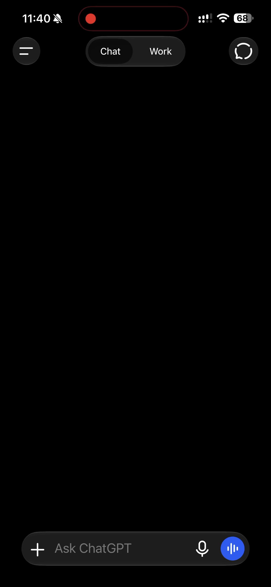
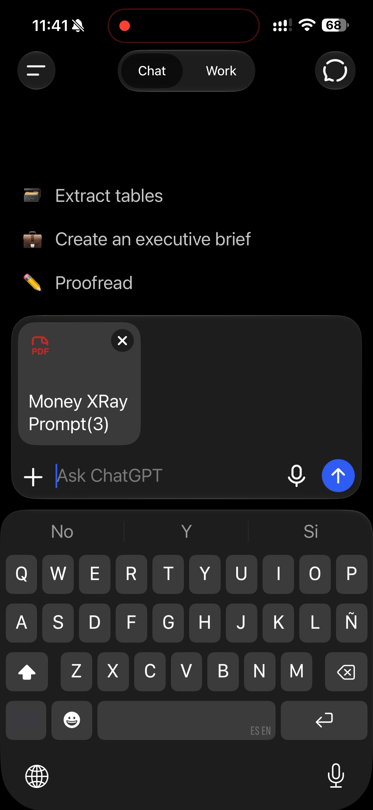
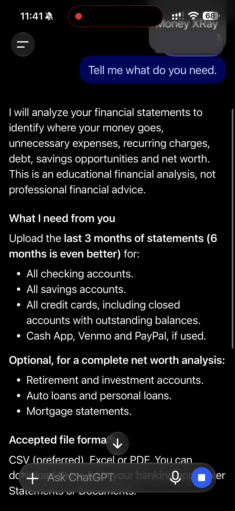
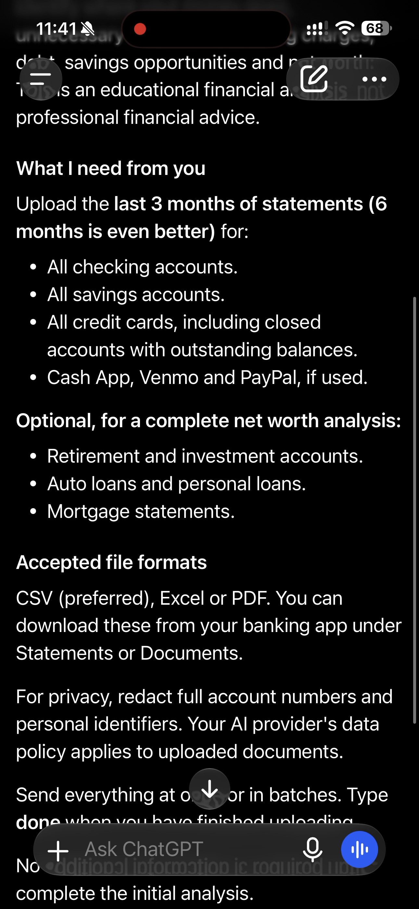
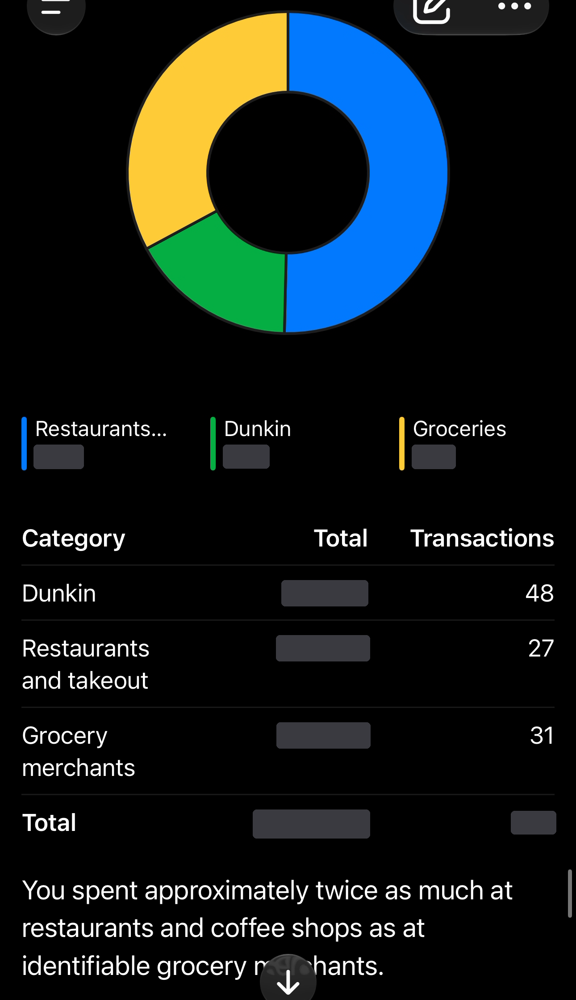
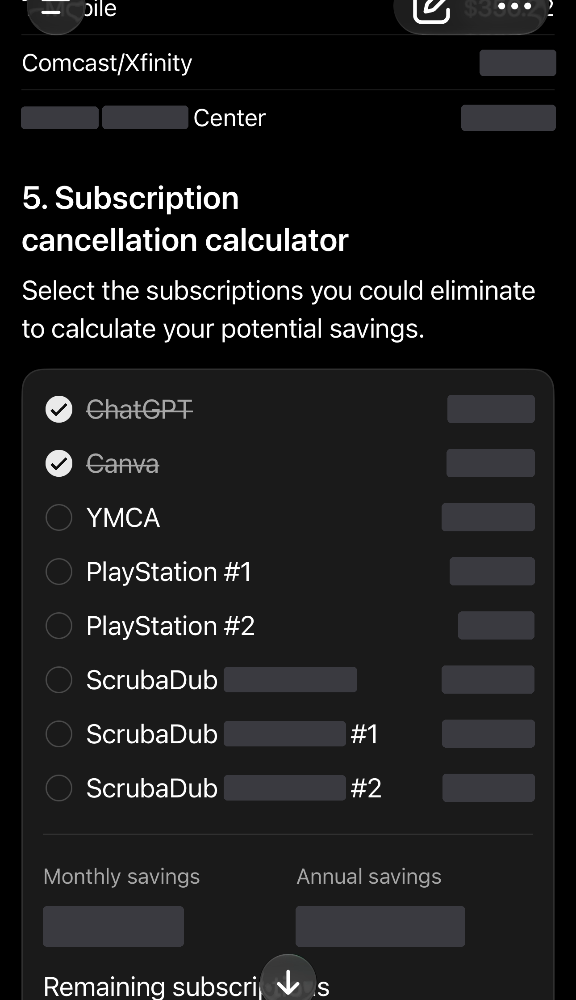
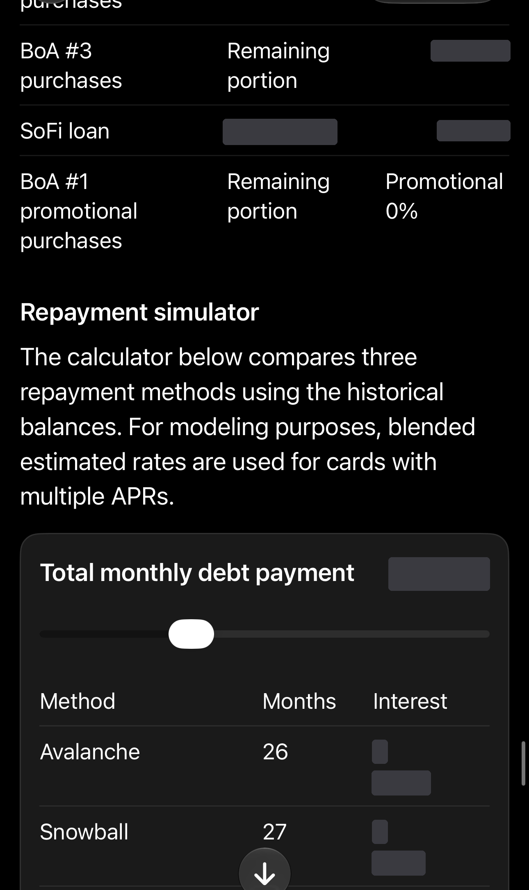

Quick-start guide: find out where your money really goes.
What you'll need
Your phone or computer, and ChatGPT, Claude or Gemini (free plans work).
The Money X-Ray prompt (the PDF or text file that came with this guide).
3 months of statements for every checking account, savings account and credit card you use. That's 3 statements per account, one for each month.
About 20 minutes.
Money X-Ray is an educational self-analysis, not financial advice. The screenshots in this guide come from a real run on ChatGPT's paid plan, with every personal detail and dollar amount blacked out. Free plans work too; they take a few more steps (see "On a free plan" near the end).
Step 1
Get your statements
Your statements are already waiting for you in three places:
Your bank or card app: look for "Statements", "Documents" or "Account services".
Your email: many banks send one every month. Search your inbox for "statement".
Your bank's website: same statements, plus a "Download" or "Export" button for CSV files.
CSV or PDF? CSV files work best and usually have no account number, name or address in them. PDFs work too if they're real statements, not photos or scans.
[Screenshots coming: finding and downloading statements in a banking app and on the bank's website]
Which accounts?
Every checking, savings and credit card account money goes in or out of. Add Venmo, Cash App or PayPal if you spend from them. Retirement, investment and loan statements are optional, for your net worth.
Step 2
Start a new chat and add the prompt
Open a new chat. Either paste the whole prompt, or attach the prompt PDF with the + button. Then send it with a short message such as "Start".

A fresh, empty chat.

The prompt attached and ready to send.
Step 3
It asks for your statements, and nothing else
No long questionnaire. It tells you what to upload and waits.

One short reply.

The list of what to upload.
Step 4
Upload everything, then type "done"
Select all your statement files at once. If the app won't take them all, send a few at a time with a note like "More coming". When the last ones are in, type done.
Selecting statements on the phone.Sending in batches works fine.
Uploads blocked or used up? Open the CSV file, copy the rows and paste them into the chat.
Step 5
Read your report
It checks every account first. The money in and out of each statement has to add up to the statement's balance, to the cent. Then it shows where the money goes, your subscriptions, fees and interest, your debt and your net worth.
The $0.00 Check: every account balanced.

Where the money goes.
The layout depends on the AI app. Some, like ChatGPT here, draw charts and calculators; others use tables.
Step 6
Answer a few questions, or just say "ok"
After the report, it asks only about things it couldn't work out on its own, like a merchant name it doesn't recognize or a payment to an account you didn't upload. Each question comes with its best guess. Reply ok to keep the guesses.
ChatGPT turned the questions into a form.
Step 7
Pick what you want next
Option
What you get
Cut costs
Pick what to cancel or cut, and see the monthly and yearly savings.
Debt-free date
Your debts ordered two ways (highest interest first, or smallest balance first), with a payoff date.
Full net worth
Add your home, car and retirement values.
PDF report
Everything in one file to keep or print.
Notion export
Your transactions for the Money X-Ray dashboard.

Checking off subscriptions to cancel.

Comparing debt payoff plans.
Step 8
Save your save block
At the end it gives you a short block of text that starts with SAVE | Money X-Ray. Copy it into your notes app. It's your progress and your starting point next month.
Saved in the Notes app.
On a free plan
It works through two accounts at a time. Type go when it asks.
The report comes in two parts. Type go for the second.
If the chat hits its limit, open a new chat, paste the prompt and your save block, and type continue.
If uploads run out for the day, paste the CSV rows instead.
Next month
Paste the prompt and your save block into a new chat, type monthly checkup, and upload last month's statements. It shows what changed: new charges, price increases, debt paid down, and your net worth.
Your privacy
Money X-Ray never asks for passwords, logins or Social Security numbers, and never connects to your bank.
Your statements go only to the AI app you choose, under that company's privacy policy. We never see them.
CSV files usually contain no account number, name or address. The AI is told never to repeat account numbers or personal details.
If something goes wrong
What happened
Try this
A file won't upload
Try the CSV version, or send fewer files at a time. For a long file, paste one month at a time.
It stopped partway
Type go. It picks up where it left off.
An account doesn't balance to $0.00
Check that you sent every month, with no missing or repeated statements. It will tell you which days look off.
It missed a subscription
Tell it the merchant name and it adds it.
The chat ran out
New chat, paste the prompt and your save block, type continue.
It mentions an account you didn't upload
That's a payment going to an account it can't see. Upload that statement, or tell it the balance.
Educational self-analysis, not financial advice. AI can make mistakes: check anything important against your statements before acting on it.